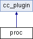

#include <proc.hpp>
Inheritance diagram for proc:

Public Member Functions | |
| proc (std::string plugin_id, std::map< std::string, std::string > properties) | |
| Constructor of the proc class. | |
| virtual | ~proc () |
| Destructor of the proc class. | |
| bool | generate_and_publish_information (DDSDynamicDataWriter *writer, DDS_DynamicData *data) |
| Gets the list of the processes of a machine and publishes their status. | |
| virtual std::string | plugin_class () |
| Returns the name of the plugin. | |
Detailed Description
This class defines the proc plugin. The objective of this plugin is to get and publish the status of the processes running on a machine. To achieve this objetive it uses the Hyperic Sigar library.
Definition at line 39 of file proc.hpp.
Constructor & Destructor Documentation
| proc::proc | ( | std::string | plugin_id, | |
| std::map< std::string, std::string > | properties | |||
| ) |
| proc::~proc | ( | ) | [virtual] |
Member Function Documentation
| bool proc::generate_and_publish_information | ( | DDSDynamicDataWriter * | writer, | |
| DDS_DynamicData * | data | |||
| ) | [virtual] |
Gets the list of the processes of a machine and publishes their status.
Gets the list of processes of a machine using Hyperic Sigar and publishes the status of them using the method publish_information -- defined and implemented in the base class.
- Parameters:
-
writer DDS Dynamic DataWriter. data DDS Dynamic DataWriter to fill--using DDS Dynamic Data methods.
- Returns:
- True if everything was right.
Implements cc_plugin.
| virtual std::string proc::plugin_class | ( | ) | [inline, virtual] |
The documentation for this class was generated from the following files:
Generated on Mon Jun 27 2011 16:03:49 for cavecanem by
 1.7.1
1.7.1